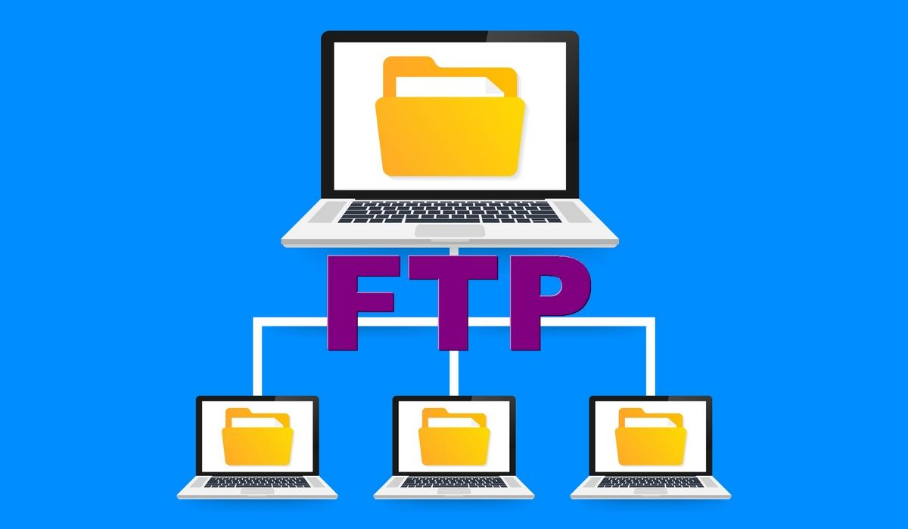

Objetivos del Procolo FTP
Uno de los objetivos principales de este protocolo consiste en permitir la
interoperabilidad entre sistemas muy distintos, escondiendo los detalles de la
estructura interna de los sistemas de ficheros locales y de la organización de los
contenidos de los ficheros.
Permitir el intercambio de archivos entre equipos remotos, de una manera eficaz
e independientemente del sistema de archivos utilizado en cada equipo
Establecer transferencias de archivos que tengan total independencia de los
sistemas de archivos usados en cliente y servidor.
